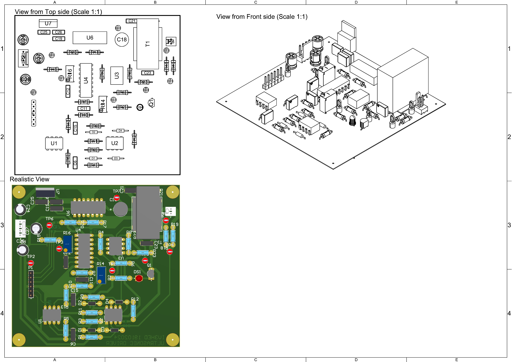

Ultrasonic driver
Introduction
The first step in the rebuild
The ultrasonic driver control board was the first thing built as we needed to check if the machine head was working at all. As we have already seen in the project overview, the ultrasonic element is a highly specialized part that has a fundamental role in the wedge bonding procedure. It would’ve made no sense to proceed further in the rebuild if this element was broken.
Modeling ultrasonic drivers
Langevin ultrasonic transducers are composed of two piezoelectric disks held together with a bolt which prevents them from separating during operation. Piezoelectric crystals vibrate when they get electrically stimulated by injecting a sine wave into their contacts. The frequency of the stimulating signal must be chosen carefully as ultrasonic transducers must be operated in proximity of their resonant frequency. A negative feedback driver regulates the input frequency in order to always keep the ultrasonic transducer at the optimal working point. This is similar to what happens in quartz oscillators used to generate clock signals, as they also feature a negative feedback loop to keep the crystal in its inductive working region near its resonant frequency.


We now plot the mechanical transfer function of the mechanical system shown above. We also plot the electrical transfer function of the transducer (i.e. its electrical impedance), obtained by stimulating the piezo material with a sinusoidal wave and measuring the current. The figure below shows that the two transfer functions are related, and that a the impedence has a valley in \(f_s\) and a peak in \(f_p\).
We want to drive our piezo at the \(f_s\) for mainly three reasons:
- The voltage is proportional to developed force, and current is proportional to velocity: therefore, constant current excitation provides approximately constant vibration amplitude;
- The electrical impedance is lower, and therefore a lower supply is needed to drive the circuit;
- The oscillating voltage fed into the piezo is not required to be purely sinusoidal.
Linking the mechanical model to the electrical one isn't easy, as it would require us to measure
the various parameters of the ultrasonic transducer.
Fortunately we don't actually need to measure anything. We just need to increase the input
frequency while measuring the current searching for the point at which the impedance becomes
purely real, i.e. the point in which the current in the device is in phase with the voltage.
Note that in the electrical transfer function depicted above the phase is in fact zero when the
frequency is \(f_s\).
Once the resonance has been reached, we just need to regulate the input voltage so that the
phase remains zero by using a negative feedback.
This can be done with a feedback loop like the one depicted in the figure below.
Building the ultrasonic driver circuit
The schematic and the PCB layout and 3D model can be found in the downloads area of this website.
The schematic
The driver schematic is reported in the image below. The following observations can be made:
- The transformer T1 matches the output impedance of the LM380 amplifier. The opamp has an output impedance of 8Ω, while the input impedance of the ultrasonic transducer is approximately 1700Ω;
- The CD4046 PLL generates an output frequency that drives the ultrasonic transducer at the series resonance point;
- The ultrasonic transducer produces a current with a variable amplitude. However, the CD4046 phase detector requires a signal with a fixed amplitude. To address this, the U3 comparator converts the transducer's variable amplitude signal into a constant amplitude signal, which is then sent to the SIGIN pin of the CD4046 PLL;
- The PLL output signal is fed into a digital potentiometer (MCP41010), which can attenuate the amplitude of the signal that drives the ultrasonic driver. This allows us to regulate the strength of the bonding procedure;
- The two peak detectors convert the sinusoidal voltage and current waves into DC voltages that can be sampled by an ADC;
- When the current signal is high enough, the red LED turns on;
- The ultrasonic transducer is driver with in-phase current, but the PLL requires a 90° out of phase signal in order to be stable (it operates with a 90° phase detector). The RC network dephases the Trans_feedback current by 180°-90°=90° so that the PLL locks correctly;
- The LM380 amplifier (which provides the current to drive the ultrasonic transducer) is powered by a +18V rail generated by the on-board L7817CV voltage regulator;
- The +18V regulator is in turn powered by a 20-24V which needs to be supplied from the outside;
- The circuit also requires dual 5V power supply (i.e. +5V and -5V rails) to be supplied from the outside.
The PCB
In order to make a reliable physical realization of the circuit reported above we decided to design
our own custom PCB. We couldn't opt for a quick-and-dirty solution like a manually soldered perf board
because this circuit operates in the MHz frequency range, making the length of connections and wires
a desing parameter.
We report the custom PCB we designed below.

Ultrasonic driver and wire feed details
We decided to report here the ultrasonic transducer and the other ancillary mechanisms required to perform wedge bonds. For the complete bonding procedure, please refer to the dedicated section in the project overview.- Top-left: detail of the ultrasonic transducer and the vibrating horn mounted on the machine head;
- Top-right: the solenoids that control the wire tear/feed and clamp mechanisms;
- Bottom-left: the tear/feed mechanism;
- Bottom-right: the wire clamp meachanism.